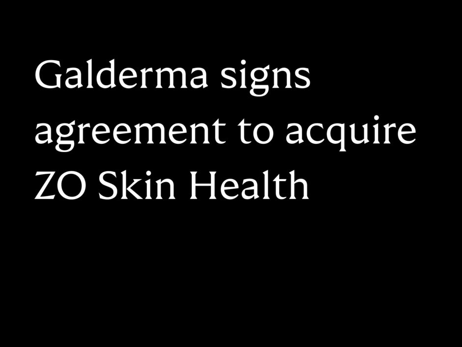

S高德美拟收购 ZO Skin Health，医生渠道的日常护肤资产受到资本重估
10 月 14 日，高德美宣布签署协议，拟以 15 亿美元企业价值收购美国专业护肤品牌 ZO Skin Health 全部股权，尚需监管批准，预计于 2026 年第四季度或 2027 年初完成。高德美披露，ZO 截至 2026 年 6 月的过去 12 个月净销售额约 3.3 亿美元；该金额为企业公告口径。高德美官方交易公告
ZO 依托皮肤科医生、医美机构和线上账户经营多步骤日常护肤；高德美旗下 Alastin 则更贴近项目治疗前后护理。两者若完成整合，医生渠道可在项目以外延续日常护肤关系，品牌也能更完整地覆盖咨询、治疗与居家维持三个环节。现阶段只有协议和管理层规划，尚未发生交割或完成渠道整合。高德美官方交易公告
同日，EltaMD 推出 Skin Recovery 精华与面霜，面向专业机构建议下的术后恢复期使用。一个是渠道与品牌资产的并购，一个是术后护理产品组合上新，均强化医美机构在产品推荐中的作用。专业护肤的竞争将更多落在适用场景、机构教育、合规功效边界及居家复购的衔接上。EltaMD 官方新闻稿
